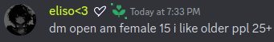
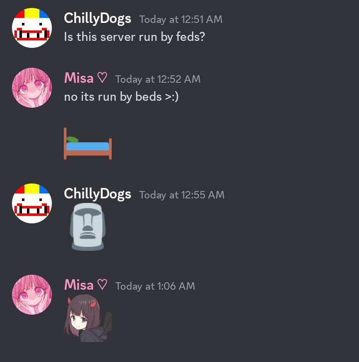

(While sounding similar to "incels", they are ANYTHING but similar.)
Femcels are weird, arguably even weirder than incels.
If you have ever browsed 4chan, especially /r9k/ & /soc/ , or God forbid a 4chan discord server, you'll know immediately what I mean.
While an introverted girl who browses 4chan may seem like a jackpot to you, 99.9% of the time it's not.
I'm going to be talking primarily about individuals on 4chan related discord servers , because you can get to know people better that way.
The server I was previously apart of, had a girl named Nikki, who ALLEGEDLY would masturbate with dead bird goop, would cut herself, and had a piss fetish.
And I may be overtly paranoid, but if you join a server and someone is talking to you like THIS nigga, that's a dude.
TLDR femcels are not great people, but don't get me wrong, incels on 4chan are...bad too, but thats its own post for another day.